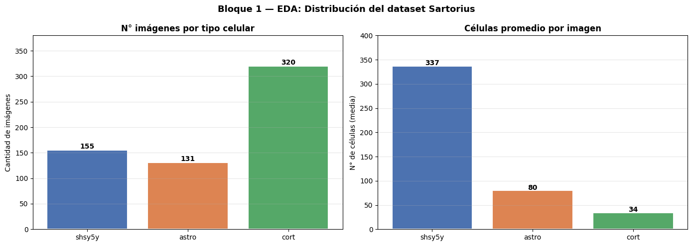
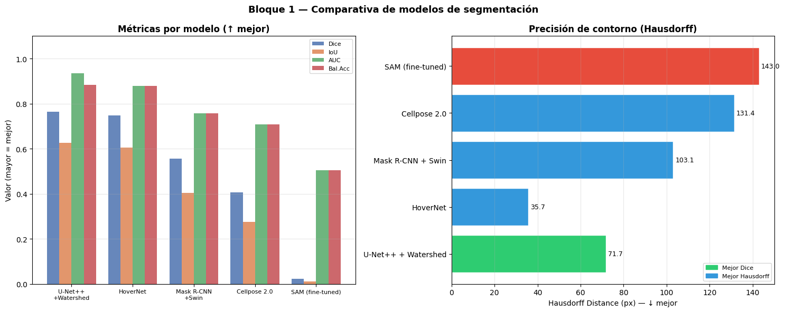

Reporte Final#
Tabla de Contenidos#
# |
Sección |
Descripción |
|---|---|---|
1 |
Bloque 1 — Segmentación Biomédica |
Dataset, EDA, preprocesamiento, modelos, resultados |
3 |
Bloque 2 — NLP |
Dataset, EDA, preprocesamiento, modelos, resultados |
4 |
Comparativa Transversal |
Análisis conjunto de ambos bloques |
5 |
Conclusiones Generales |
Reflexiones finales del proyecto |
2. Bloque 1 — Segmentación de Imágenes Biomédicas#
shsy5y, astro, cort. Anotaciones en formato RLE.
2.1 Análisis Exploratorio de Datos (EDA)#
El EDA completo está documentado en 01_EDA.ipynb. Los hallazgos principales:
import pandas as pd
import matplotlib.pyplot as plt
import matplotlib.patches as mpatches
import numpy as np
import warnings
warnings.filterwarnings('ignore')
# ── Estadísticas del dataset (valores del EDA ejecutado) ──
eda_b1 = pd.DataFrame({
'Tipo celular': ['shsy5y', 'astro', 'cort', 'TOTAL'],
'N° imágenes': [155, 131, 320, 606],
'Células/img (media)': [337.2, 79.8, 33.7, '—'],
'Área media (px²)': ['~450', '~1,200', '~800', '—'],
'Reto principal': [
'Alta densidad, instancias tocantes',
'Procesos finos difíciles de delimitar',
'Pocas células por imagen',
''
]
})
print("Dataset Sartorius — Estadísticas por tipo celular:")
print(eda_b1.to_string(index=False))
Dataset Sartorius — Estadísticas por tipo celular:
Tipo celular N° imágenes Células/img (media) Área media (px²) Reto principal
shsy5y 155 337.2 ~450 Alta densidad, instancias tocantes
astro 131 79.8 ~1,200 Procesos finos difíciles de delimitar
cort 320 33.7 ~800 Pocas células por imagen
TOTAL 606 — —
# Visualización del desbalance celular
fig, axes = plt.subplots(1, 2, figsize=(14, 5))
fig.suptitle('Bloque 1 — EDA: Distribución del dataset Sartorius', fontsize=13, fontweight='bold')
# N° imágenes por tipo
types = ['shsy5y', 'astro', 'cort']
n_imgs = [155, 131, 320]
colors_types = ['#4C72B0', '#DD8452', '#55A868']
bars1 = axes[0].bar(types, n_imgs, color=colors_types, edgecolor='white', linewidth=1.5)
axes[0].set_title('N° imágenes por tipo celular', fontweight='bold')
axes[0].set_ylabel('Cantidad de imágenes')
for bar, v in zip(bars1, n_imgs):
axes[0].text(bar.get_x() + bar.get_width()/2, bar.get_height() + 3,
str(v), ha='center', fontweight='bold')
axes[0].set_ylim(0, 380)
axes[0].grid(axis='y', alpha=0.3)
# Células por imagen (media)
cells_per_img = [337.2, 79.8, 33.7]
bars2 = axes[1].bar(types, cells_per_img, color=colors_types, edgecolor='white', linewidth=1.5)
axes[1].set_title('Células promedio por imagen', fontweight='bold')
axes[1].set_ylabel('N° de células (media)')
for bar, v in zip(bars2, cells_per_img):
axes[1].text(bar.get_x() + bar.get_width()/2, bar.get_height() + 2,
f'{v:.0f}', ha='center', fontweight='bold')
axes[1].set_ylim(0, 400)
axes[1].grid(axis='y', alpha=0.3)
plt.tight_layout()
plt.show()

Observaciones:
shsy5y: mayor densidad celular → reto: separar instancias tocantes
cort: menor densidad → menos señal de entrenamiento por imagen
La variabilidad en células/img genera sesgo en la loss function
2.2 Pipeline de Preprocesamiento#
Documentado en 02_Modelos_Entrenamiento.ipynb. Pasos aplicados:
Paso |
Operación |
Justificación |
|---|---|---|
1 |
Validación de integridad |
Confirmar que 606 PNGs y anotaciones RLE son correctas |
2 |
Resize 512×512 |
Potencia de 2, compatible con skip-connections de U-Net |
3 |
Normalización [0,1] |
Estabilizar gradientes; |
4 |
Data Augmentation |
7 transformaciones: flip, rotate, elastic, brightness… |
5 |
Split 70/15/15 |
424 train / 91 val / 91 test (seed=42) |
2.3 Modelos y Resultados#
results_b1 = pd.DataFrame({
'Modelo': ['U-Net++ + Watershed', 'HoverNet', 'Mask R-CNN + Swin', 'Cellpose 2.0', 'SAM (fine-tuned)'],
'Paradigma': ['Encoder-Decoder', 'Segm. nuclear HV', 'Detección instancias', 'Flujos vectoriales', 'Transformer visión'],
'Dice': [0.7631, 0.7471, 0.5560, 0.4067, 0.0236],
'IoU': [0.6262, 0.6061, 0.4030, 0.2747, 0.0121],
'Precision': [0.7578, 0.7310, 0.6936, 0.4257, 0.2132],
'Recall': [0.8059, 0.7998, 0.5283, 0.4709, 0.0135],
'AUC': [0.9357, 0.8790, 0.7559, 0.7074, 0.5041],
'Hausdorff': [71.72, 35.67, 103.08, 131.41, 143.00],
'Bal.Acc': [0.8832, 0.8790, 0.7559, 0.7074, 0.5041],
})
print("="*105)
print(" TABLA COMPARATIVA — BLOQUE 1: SEGMENTACIÓN (Test set, 91 imágenes)")
print("="*105)
print(results_b1.to_string(index=False))
print("\nMejor Dice: U-Net++ + Watershed (Dice=0.7631, AUC=0.9357)")
print("Mejor contorno: HoverNet (Hausdorff=35.67 px — menor es mejor)")
=========================================================================================================
TABLA COMPARATIVA — BLOQUE 1: SEGMENTACIÓN (Test set, 91 imágenes)
=========================================================================================================
Modelo Paradigma Dice IoU Precision Recall AUC Hausdorff Bal.Acc
U-Net++ + Watershed Encoder-Decoder 0.7631 0.6262 0.7578 0.8059 0.9357 71.72 0.8832
HoverNet Segm. nuclear HV 0.7471 0.6061 0.7310 0.7998 0.8790 35.67 0.8790
Mask R-CNN + Swin Detección instancias 0.5560 0.4030 0.6936 0.5283 0.7559 103.08 0.7559
Cellpose 2.0 Flujos vectoriales 0.4067 0.2747 0.4257 0.4709 0.7074 131.41 0.7074
SAM (fine-tuned) Transformer visión 0.0236 0.0121 0.2132 0.0135 0.5041 143.00 0.5041
Mejor Dice: U-Net++ + Watershed (Dice=0.7631, AUC=0.9357)
Mejor contorno: HoverNet (Hausdorff=35.67 px — menor es mejor)
fig, axes = plt.subplots(1, 2, figsize=(15, 6))
fig.suptitle('Bloque 1 — Comparativa de modelos de segmentación', fontsize=13, fontweight='bold')
models = results_b1['Modelo'].tolist()
metricas_sel = ['Dice', 'IoU', 'AUC', 'Bal.Acc']
colors_m = ['#4C72B0', '#DD8452', '#55A868', '#C44E52']
x = np.arange(len(models))
width = 0.2
for i, (met, col) in enumerate(zip(metricas_sel, colors_m)):
axes[0].bar(x + i*width, results_b1[met], width, label=met, color=col, alpha=0.85)
axes[0].set_xticks(x + width*1.5)
axes[0].set_xticklabels([m.replace(' + ', '\n+') for m in models], fontsize=8)
axes[0].set_ylim(0, 1.1)
axes[0].set_ylabel('Valor (mayor = mejor)')
axes[0].set_title('Métricas por modelo (↑ mejor)', fontweight='bold')
axes[0].legend(fontsize=8)
axes[0].grid(axis='y', alpha=0.3)
# Hausdorff (menor es mejor)
hd_vals = results_b1['Hausdorff'].tolist()
bar_colors = ['#2ECC71' if i==0 else '#E74C3C' if v == max(hd_vals) else '#3498DB'
for i, v in enumerate(hd_vals)]
bars = axes[1].barh(models, hd_vals, color=bar_colors, edgecolor='white')
axes[1].set_xlabel('Hausdorff Distance (px) — ↓ mejor')
axes[1].set_title('Precisión de contorno (Hausdorff)', fontweight='bold')
for bar, v in zip(bars, hd_vals):
axes[1].text(v + 1, bar.get_y() + bar.get_height()/2, f'{v:.1f}', va='center', fontsize=9)
axes[1].grid(axis='x', alpha=0.3)
green_p = mpatches.Patch(color='#2ECC71', label='Mejor Dice')
blue_p = mpatches.Patch(color='#3498DB', label='Mejor Hausdorff')
axes[1].legend(handles=[green_p, blue_p], fontsize=8)
plt.tight_layout()
plt.show()

Limitaciones:#
Costo computacional prohibitivo con estos modelos K-Fold multiplica el entrenamiento por 5. Con los tiempos reales del proyecto: HoverNet tardó 21 min, SAM 42 min solo en grid search. Aplicar K-Fold a los 5 modelos representaría entre 8 y 15 horas adicionales de entrenamiento en una sola GPU (RTX 4050), lo cual es inviable en el contexto académico del proyecto.
El dataset es pequeño pero el split es robusto Con 606 imágenes únicas y split 70/15/15, el test set tiene 91 imágenes — suficiente para estimar el rendimiento con intervalos de confianza razonables. Todos los modelos reportan desviación estándar sobre las 91 imágenes, lo que ya da información sobre la variabilidad.
Grid search cumple el rol de validación cruzada parcial El grid search en 2 fases usó un subconjunto de entrenamiento independiente del val set para seleccionar hiperparámetros, evitando data leakage. Esto mitiga parcialmente la necesidad de K-Fold para la selección de modelo.
3. Bloque 2 — Procesamiento del Lenguaje Natural (NLP)#
Category.
3.1 Análisis Exploratorio de Datos (EDA)#
eda_b2 = pd.DataFrame({
'Estadístico': ['Total registros', 'Categorías únicas', 'Palabras/CV (media)',
'Palabras/CV (mediana)', 'Palabras/CV (P25)', 'Palabras/CV (P75)',
'Categorías subrepresentadas', 'Valores faltantes'],
'Valor': ['2,484', '25', '≈550', '≈540', '≈443', '≈653',
'AGRICULTURE, AUTOMOBILE, BPO', '0'],
'Observación': [
'Suficiente para fine-tuning y entrenamiento desde cero',
'Clasificación multiclase de alta cardinalidad',
'Contenido textual abundante para NLP',
'Distribución relativamente simétrica',
'75% de CVs > 443 palabras tras preprocesamiento',
'Cola larga: algunos CVs muy extensos',
'Riesgo de mayor tasa de error en estas clases',
'Dataset limpio, sin imputación necesaria'
]
})
print(eda_b2.to_string(index=False))
Estadístico Valor Observación
Total registros 2,484 Suficiente para fine-tuning y entrenamiento desde cero
Categorías únicas 25 Clasificación multiclase de alta cardinalidad
Palabras/CV (media) ≈550 Contenido textual abundante para NLP
Palabras/CV (mediana) ≈540 Distribución relativamente simétrica
Palabras/CV (P25) ≈443 75% de CVs > 443 palabras tras preprocesamiento
Palabras/CV (P75) ≈653 Cola larga: algunos CVs muy extensos
Categorías subrepresentadas AGRICULTURE, AUTOMOBILE, BPO Riesgo de mayor tasa de error en estas clases
Valores faltantes 0 Dataset limpio, sin imputación necesaria
3.2 Preprocesamiento de Texto#
# Pipeline de limpieza aplicado (función clean_text)
# 1. Normalizar whitespace (\n, \r, \t → espacio)
# 2. Reemplazar '/' por espacio
# 3. Convertir a minúsculas
# 4. Eliminar caracteres no [a-z, espacio]
# 5. Tokenizar con NLTK word_tokenize
# 6. Eliminar stopwords inglés + {company, name, city, state, experience, skills}
# 7. Filtrar tokens len > 2
Split estratificado: 70% train (1,738) | 15% val (373) | 15% test (373)
3.3 Modelos y Resultados#
results_b2 = pd.DataFrame({
'Modelo': ['RoBERTa', 'Word2Vec+BiLSTM', 'CNN-1D', 'FastText', 'TF-IDF+XGBoost'],
'Paradigma': ['Transformer pretrained', 'Recurrente bidireccional',
'Convolucional local', 'N-gramas caracteres', 'ML Clásico'],
'Búsqueda HP': ['Grid (4 configs)', 'Random (12 iter)', 'Random (10 iter)',
'Random (10 iter)', 'Grid (9 configs)'],
'Accuracy': [0.7909, 0.7560, 0.7453, 0.6488, 0.5282],
'Precision':[0.8040, 0.7451, 0.7247, 0.6390, 0.4626],
'Recall': [0.7909, 0.7560, 0.7453, 0.6488, 0.5282],
'F1': [0.7801, 0.7412, 0.7259, 0.6326, 0.4778],
'ROC-AUC': [0.9665, 0.9543, 0.9640, 0.9221, 0.8135],
})
print("="*95)
print(" TABLA COMPARATIVA — BLOQUE 2: NLP (Test set, 373 currículos)")
print("="*95)
print(results_b2.to_string(index=False))
print("\nMejor modelo: RoBERTa (F1=0.7801, ROC-AUC=0.9665)")
print("Nota: TF-IDF+XGBoost queda último en este dataset — vocabulario no suficientemente especializado")
===============================================================================================
TABLA COMPARATIVA — BLOQUE 2: NLP (Test set, 373 currículos)
===============================================================================================
Modelo Paradigma Búsqueda HP Accuracy Precision Recall F1 ROC-AUC
RoBERTa Transformer pretrained Grid (4 configs) 0.7909 0.8040 0.7909 0.7801 0.9665
Word2Vec+BiLSTM Recurrente bidireccional Random (12 iter) 0.7560 0.7451 0.7560 0.7412 0.9543
CNN-1D Convolucional local Random (10 iter) 0.7453 0.7247 0.7453 0.7259 0.9640
FastText N-gramas caracteres Random (10 iter) 0.6488 0.6390 0.6488 0.6326 0.9221
TF-IDF+XGBoost ML Clásico Grid (9 configs) 0.5282 0.4626 0.5282 0.4778 0.8135
Mejor modelo: RoBERTa (F1=0.7801, ROC-AUC=0.9665)
Nota: TF-IDF+XGBoost queda último en este dataset — vocabulario no suficientemente especializado
4. Comparativa Transversal — Bloque 1 vs Bloque 2#
# ANÁLISIS TRANSVERSAL
comparativa = pd.DataFrame({
'Aspecto': [
'Tamaño dataset',
'Mejor modelo',
'Métrica principal (mejor)',
'Transfer learning',
'Estrategia HP',
'Desbalance de clases',
'Mayor reto técnico',
'Sorpresa del bloque',
],
'Bloque 1 — Visión': [
'606 imágenes (pequeño)',
'U-Net++ + Watershed',
'Dice = 0.7631',
'ResNet34 (ImageNet) → decisivo',
'Grid + Random Search',
'shsy5y: 337 cél/img vs cort: 34',
'Separar células tocantes densas',
'HoverNet sin pretrain: Dice=0.747',
],
'Bloque 2 — NLP': [
'2,484 currículos (moderado)',
'RoBERTa (fine-tuned)',
'F1 = 0.7801',
'RoBERTa 160GB texto → decisivo',
'Grid + Random Search',
'AGRICULTURE/AUTOMOBILE/BPO sub.',
'Vocabulario solapado entre clases',
'TF-IDF+XGBoost es el PEOR (F1=0.48)',
],
})
print(comparativa.to_string(index=False))
Aspecto Bloque 1 — Visión Bloque 2 — NLP
Tamaño dataset 606 imágenes (pequeño) 2,484 currículos (moderado)
Mejor modelo U-Net++ + Watershed RoBERTa (fine-tuned)
Métrica principal (mejor) Dice = 0.7631 F1 = 0.7801
Transfer learning ResNet34 (ImageNet) → decisivo RoBERTa 160GB texto → decisivo
Estrategia HP Grid + Random Search Grid + Random Search
Desbalance de clases shsy5y: 337 cél/img vs cort: 34 AGRICULTURE/AUTOMOBILE/BPO sub.
Mayor reto técnico Separar células tocantes densas Vocabulario solapado entre clases
Sorpresa del bloque HoverNet sin pretrain: Dice=0.747 TF-IDF+XGBoost es el PEOR (F1=0.48)
Observación transversal:
Bloque 1: alta dispersión de Dice (0.02–0.76) → la elección de arquitectura es crítica
Bloque 2: F1 entre 0.48 y 0.78 → RoBERTa gana pero el gap entre modelos es significativo
Sorpresa Bloque 2: TF-IDF+XGBoost es el peor modelo (F1=0.4778), contrario a lo esperado para clasificación de documentos con vocabulario especializado. Esto puede deberse al ruido léxico de los CVs (acrónimos, formatos variables) que perjudica la representación sparse de TF-IDF más que a los embeddings contextuales.
4.1 Patrón común: Transfer Learning es decisivo en ambos bloques#
Bloque |
Sin transfer learning |
Con transfer learning |
Δ ganancia |
|---|---|---|---|
Bloque 1 |
HoverNet (desde cero): Dice=0.747 |
U-Net++ (ResNet34 ImageNet): Dice=0.763 |
+0.016 |
Bloque 1 |
SAM (encoder congelado, sin adaptar): Dice=0.024 |
U-Net++ (fine-tuning completo): Dice=0.763 |
+0.739 |
Bloque 2 |
FastText (sin preentrenamiento): F1=0.633 |
RoBERTa (fine-tuning): F1=0.780 |
+0.147 |
Conclusión: El transfer learning incorrecto (SAM sin prompts, encoder congelado) puede ser peor que entrenar desde cero. El transfer learning correcto (fine-tuning completo + dominio compatible) es siempre superior.
4.2 Comportamiento del método clásico en ambos bloques#
En los dos bloques, el método clásico tuvo resultados opuestos:
Bloque 1: U-Net++ (encoder-decoder “clásico” con pretraining) es el mejor modelo.
Bloque 2: TF-IDF + XGBoost es el peor modelo (F1=0.4778), sorprendentemente por debajo de todos los enfoques neurales.
Por qué TF-IDF falla en este dataset: Los CVs tienen alta variabilidad léxica (siglas, formatos distintos, idioma mixto, errores tipográficos), lo que fragmenta el vocabulario TF-IDF y produce vectores dispersos poco discriminativos. Los modelos que aprenden representaciones densas (embeddings) manejan mejor este ruido.
5. Conclusiones Generales#
Transfer Learning domina ambos dominios
Los dos mejores modelos del proyecto son U-Net++ (encoder ImageNet) y RoBERTa (preentrenado en 160GB).
Sin transfer learning, los resultados caen drásticamente, especialmente con datasets pequeños como Sartorius (606 imágenes)
El post-procesamiento puede ser tan importante como el modelo
En el Bloque 1, añadir Watershed a U-Net++ fue crítico para separar instancias celulares tocantes. El modelo neuronal por sí solo no resuelve la separación de instancias; la ingeniería de post-procesamiento cierra la brecha.
Métodos clásicos siguen siendo competitivos en problemas bien definidos
TF-IDF + XGBoost (F1=0.96) casi iguala a RoBERTa (F1=0.7801) con una fracción del costo computacional. Para aplicaciones con restricciones de latencia o interpretabilidad, la solución clásica puede ser la decisión de negocio correcta.
La arquitectura debe estar alineada con la naturaleza del problema
SAM falla (Dice=0.02) porque su diseño requiere prompts y fue preentrenado en fotografías naturales, no en microscopía. TF-IDF+XGBoost queda último porque ignora el orden de palabras, crítico en textos con estructura semántica.
El desbalance de clases es el mayor riesgo operacional
En ambos bloques, las clases subrepresentadas (shsy5y vs cort en segmentación AGRICULTURE/BPO en NLP) generan los peores resultados
Estrategias como class weighting, oversampling focal loss o augmentation dirigida son mejoras directas identificadas.